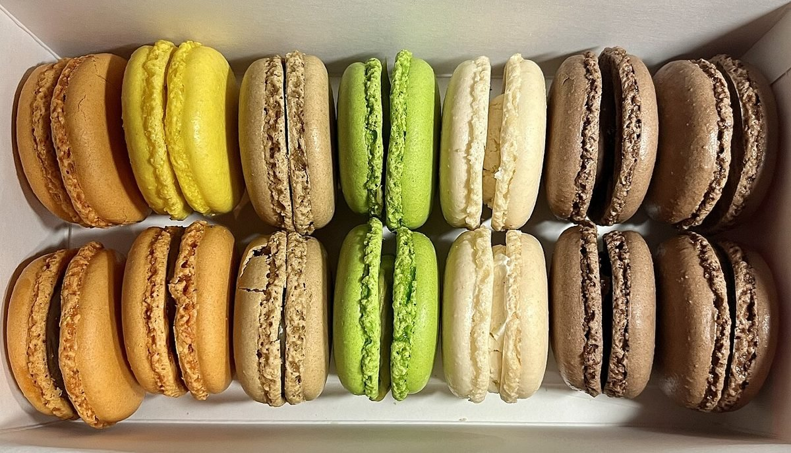
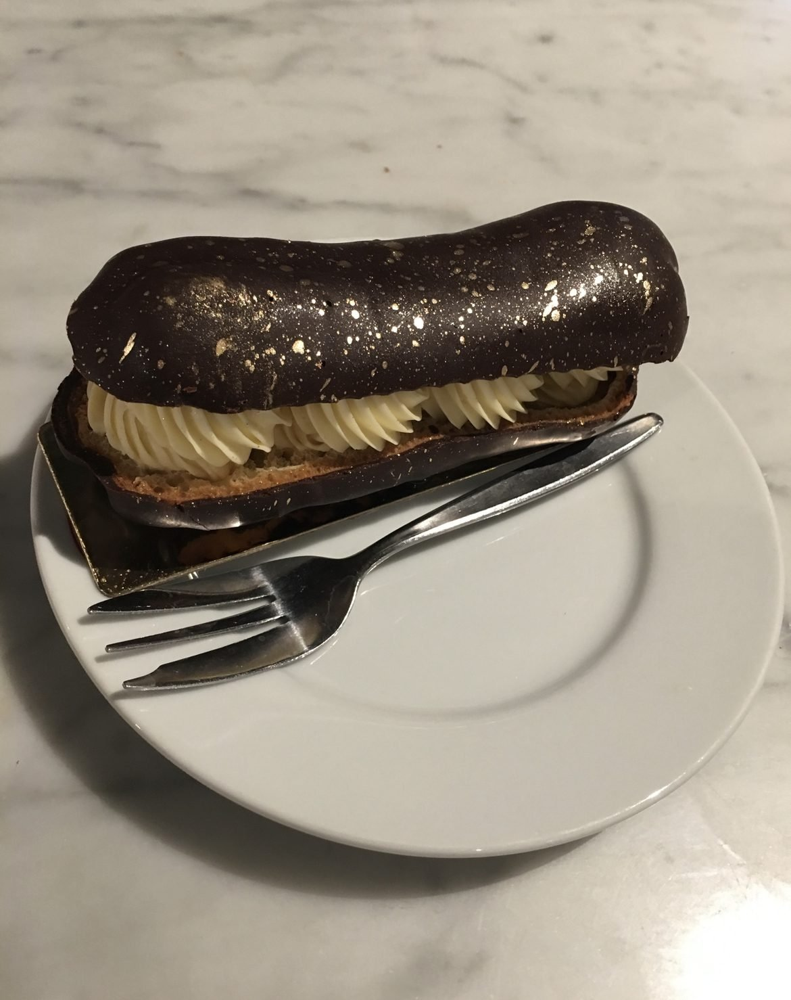
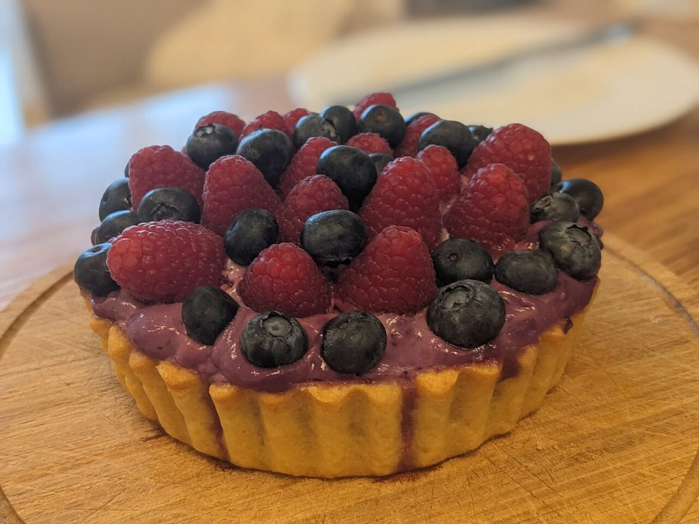
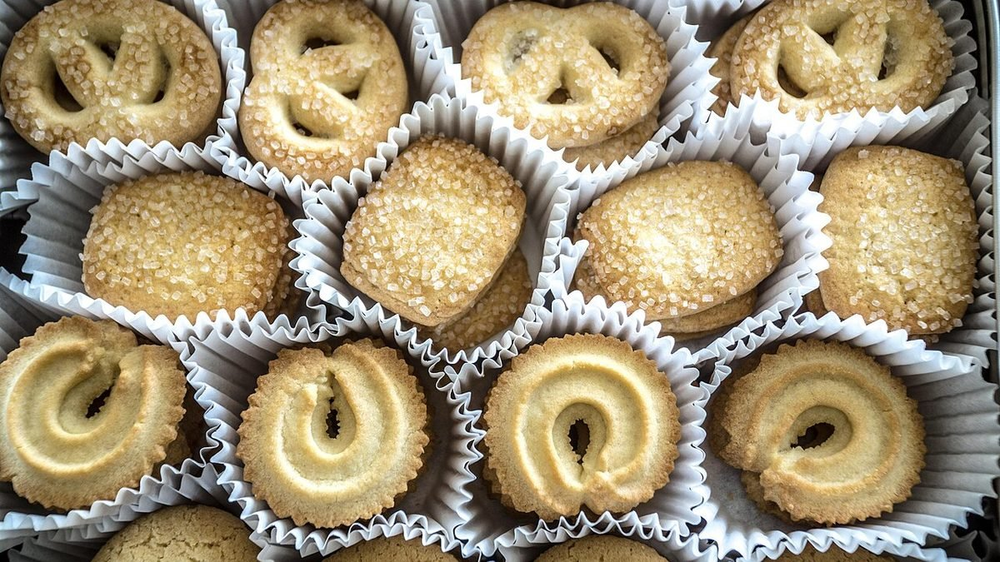
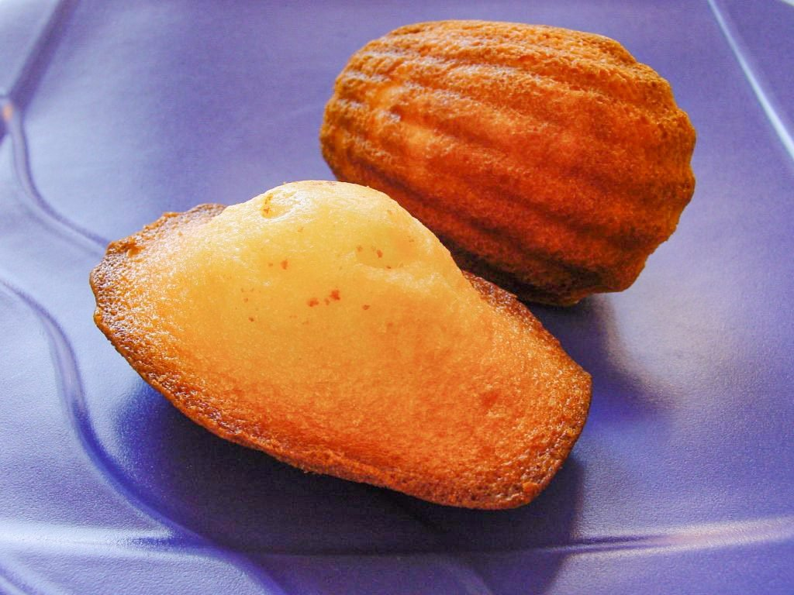
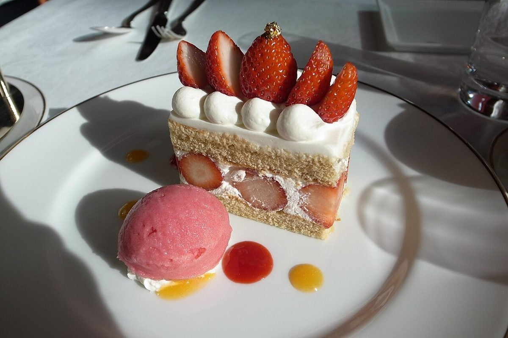

茨城県筑西市 ／ 洋菓子店
Patisserie Le Petit Prince
ケーキの箱をあけるときの、ちいさなわくわく。
そんな時間を、筑西市のパティスリーで。
※このキャッチコピーは制作側の案です。



箱をひらく
洋菓子のイメージ写真です。実際のラインナップは、お店へお問い合わせください。






制作側の案
日常の中の、ちょっとした特別を。
店名の由来や店主様の思いは、まだ私たちには分かりません。そのため、ここに書いているコンセプトは、洋菓子店という業種と店名の響きから考えた「制作側の案」です。実際のお店の考え方にあわせて、ご自由に書き換えられます。
お客様が箱をあけるときのうれしさや、贈る人の気持ちが伝わるようなページを目指しています。

ご利用の流れ(案)
- 1Instagramでお店の雰囲気を見る
- 2お電話でご質問やご相談をする
- 3筑西市直井のお店へ足をはこぶ
ご予約の方法・受付時間などは準備中です。お電話でお問い合わせください。